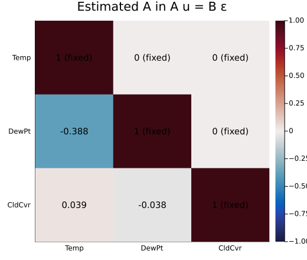
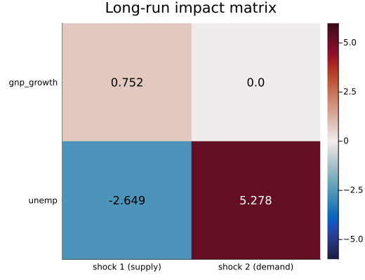
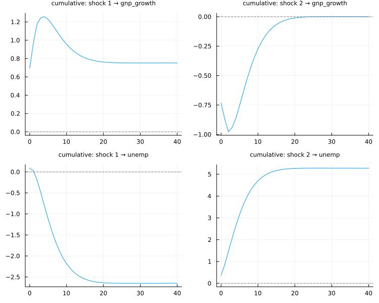
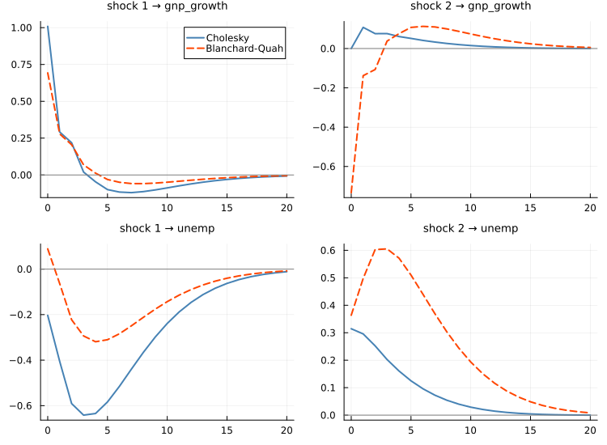
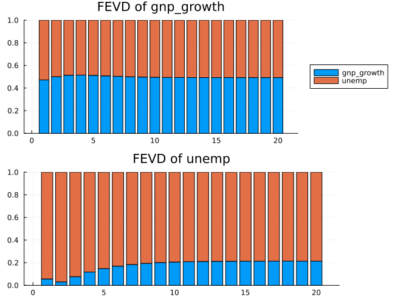

Structural VAR
The orthogonalized impulse responses of Causality and Impulse Responses come from a Cholesky factor, and that chapter showed what it costs: the answer depends on the order of the columns, and the order is a choice the data cannot make. A structural VAR replaces the ordering with a stated set of restrictions — economics, physics, or plain assumption — written down where a reader can see and dispute it.
The reduced form is the VAR you already fitted. Its residuals u_t are correlated, so no single one of them is "a shock to" anything. The structural model says they are mixtures of uncorrelated structural shocks ε_t:
\[A u_t = B \varepsilon_t, \qquad \varepsilon_t \sim (0, I_K)\]
so Σ_u = A⁻¹B B′A′⁻¹. Σ_u has K(K+1)/2 distinct elements, and that is all the information the data carry about A and B together. Every other element has to be fixed by assumption.
Every chart is generated by the @example block above it at build time, and each was also rendered locally and looked at before it was committed.
Short-run restrictions: the A and B matrices
fit_svar takes A and B as K × K matrices with missing marking the elements to estimate and numbers fixing the rest. Give only A for an A-model (B = I), only B for a B-model, or both.
The running example is temperature, dew point and cloud cover at Lake Shasta:
using TSAnalytics, Plots
D = dataset("climhyd")
mw = fit_var((Temp = D.Temp, DewPt = D.DewPt, CldCvr = D.CldCvr), 2)
s = fit_svar(mw; A = [1.0 0.0 0.0; missing 1.0 0.0; missing missing 1.0],
B = [missing 0.0 0.0; 0.0 missing 0.0; 0.0 0.0 missing])Structural VAR, AB-model K=3 T=452
variables: Temp, DewPt, CldCvr
free parameters: 6 of 6 (just-identified)
A =
1.0 0.0 0.0
-0.387714 1.0 0.0
0.039405 -0.037861 1.0
B =
2.918783 0.0 0.0
0.0 1.861884 0.0
0.0 0.0 0.0848
converged in 7 iterations (:scoring)That one is recursive and just-identified — six free parameters for the six distinct elements of Σ_u — so it reproduces the Cholesky responses exactly. It is the ordering of the last chapter written as an explicit model, and the estimated A makes its content visible:
A = s.A
hm = heatmap(string.(mw.names), string.(mw.names), A; c = :balance, yflip = true,
clims = (-1, 1), title = "Estimated A in A u = B ε", size = (520, 440))
for a in 1:3, b in 1:3
annotate!(hm, b - 0.5, a - 0.5,
text(s.A_mask[a, b] ? string(round(A[a, b]; digits = 3)) :
"$(Int(A[a, b])) (fixed)", 10, :black))
end
hm
Row i is the equation for variable i's residual. The zeros above the diagonal are the assumption: dew point and cloud cover do not move temperature within the month. Everything below it is estimated — and the -0.388 says a one-unit temperature surprise comes with a 0.388 dew-point surprise, which is what the Cholesky factor was encoding all along.
Over-identification is testable
Fewer free parameters than K(K+1)/2 over-identifies the model, and then the extra restrictions can be tested. Suppose cloud cover responds to dew point within the month but not to temperature directly — fix A[3,1] at zero:
s1 = fit_svar(mw; A = [1.0 0.0 0.0; missing 1.0 0.0; 0.0 missing 1.0],
B = [missing 0.0 0.0; 0.0 missing 0.0; 0.0 0.0 missing])
s1.lr_test(statistic = 384.90335396133395, df = 1, pvalue = 1.0652260623045924e-85)Rejected decisively. The estimated A[3,1] in the just-identified model was small, 0.039, but cloud cover's residual variance is small too, and on 452 months that coefficient is very precisely not zero. Small is not the same as absent.
More free parameters than K(K+1)/2 cannot be identified at all, and fit_svar refuses them before any optimisation — as vars does; statsmodels fails later, inside, with a singular-matrix error.
A = [1 0; missing 1] alone has one free parameter for a 2 × 2 Σ_u: it also forces both structural variances to one. It is the A-model both references' documentation usually shows, and it is usually rejected. The just-identified recursive model needs a free diagonal B as well, as above. statsmodels reports the reduced form's log-likelihood as its SVAR llf whatever the restrictions, which hides the problem.
Long-run restrictions: Blanchard and Quah
Short-run zeros say what cannot happen within the period. Blanchard and Quah (1989) restricted the long run instead, and their example is the canonical one: output growth and unemployment, with two shocks. A supply shock may change the level of output permanently; a demand shock may move it for a while but not forever. That one zero, in the long-run effect of the demand shock on the level of output, identifies the model.
econ5 carries the same two series for the United States:
e = dataset("econ5")
vb = fit_var((gnp_growth = 100 .* diff(log.(e.gnp)), unemp = e.unemp[2:end]), 2)
bq = blanchard_quah(vb)Structural VAR, Blanchard-Quah (long-run restrictions) K=2 T=158
variables: gnp_growth, unemp
A =
1.0 0.0
0.0 1.0
B =
0.692804 -0.732878
0.088866 0.36378
closed formblanchard_quah orders the shocks so that the restriction falls on the first variable: the last shock has no permanent effect on the first variable. Here that makes shock 1 the supply shock and shock 2 the demand shock. The long-run impact matrix shows the zero:
L = bq.lrim
hm = heatmap(["shock 1 (supply)", "shock 2 (demand)"], ["gnp_growth", "unemp"], L;
c = :balance, clims = (-6, 6), yflip = true,
title = "Long-run impact matrix", size = (520, 400))
for a in 1:2, b in 1:2
annotate!(hm, b - 0.5, a - 0.5, text(string(round(L[a, b]; digits = 3)), 11,
abs(L[a, b]) > 4 ? :white : :black))
end
hm
Only the first row means anything in levels: it is the permanent effect on the level of GNP, because GNP entered in growth rates. Unemployment entered in levels, so its row is a sum of level responses with no long-run interpretation of its own.
The cumulative responses make the restriction visible over time:
plot(irf(bq, 40; cumulative = true); size = (750, 600))
The top-right panel is the point of the exercise: the demand shock moves the level of GNP, and the movement dies away to exactly zero. The supply shock's effect (top left) does not; it settles at a permanent 0.75.
A structural shock's sign is a normalisation, not an estimate. As estimated, shock 2 lowers output growth on impact — it is a contractionary demand shock. Multiply its column by -1 to read it as an expansionary one; nothing else changes.
Structural against Cholesky
The same VAR, identified two ways:
ro, rs = irf(vb, 20), irf(bq, 20)
panels = []
for a in 1:2, b in 1:2
p = plot(0:20, [M[a, b] for M in ro.orth]; color = :steelblue, lw = 2,
label = (a, b) == (1, 1) ? "Cholesky" : "",
title = "shock $b → $(vb.names[a])", titlefontsize = 9)
plot!(p, 0:20, [M[a, b] for M in rs.orth]; color = :orangered, lw = 2, linestyle = :dash,
label = (a, b) == (1, 1) ? "Blanchard-Quah" : "")
hline!(p, [0.0]; color = :gray, label = "")
push!(panels, p)
end
plot(panels...; layout = (2, 2), size = (750, 550))
Same data, same likelihood, different stories. The Cholesky ordering says the second shock cannot move GNP growth within the quarter; the long-run restriction lets it, and it does. Note also the bottom-left panel: under Blanchard-Quah a favourable supply shock raises unemployment slightly on impact before lowering it, where the Cholesky ordering has it falling at once. Small, early differences of this kind are where identification choices show.
Which shock matters
fevd on a structural model splits the forecast error variance by structural shock:
plot(fevd(bq, 20); size = (650, 500))
f = fevd(bq, 20)
println("unemployment, share from demand: h=1 ", round(f.decomp[2, 1, 2], digits = 2),
", h=20 ", round(f.decomp[2, 20, 2], digits = 2))unemployment, share from demand: h=1 0.94, h=20 0.79Demand shocks account for almost all of unemployment's short-run forecast error and most of it even five years out. GNP growth's error is split roughly evenly at every horizon.
Identification is an assumption
A just-identified model fits the data exactly as well as any other — the likelihood is the same, because every one of them reproduces Σ_u exactly. The Cholesky ordering and Blanchard-Quah above are both just-identified, and the data are indifferent between them. Which restrictions are right is economics, not statistics; only the over-identifying ones are testable.
That is not a defect of the method but the whole of its content. A structural VAR is a way of making an identifying assumption explicit, so that a reader who disagrees with it can see exactly where.
What the structural results carry
Structural impulse responses and variance decompositions are irf(s, h) and fevd(s, h) — the same recursion as the reduced form's, with the structural impact matrix P = A⁻¹B in place of the Cholesky factor. The result's factorization field records which it was, and plot labels structural impulses as shock j rather than with a variable's name, because a structural shock is not a variable.
method = :scoring (the default) is Amisano and Giannini's scoring algorithm, as vars::SVAR uses; method = :mle maximises the same likelihood with a quasi-Newton method. Standard errors for the free elements of A and B come from the inverse information matrix.
What is not here yet
- Error bands for structural impulse responses.
irf(s, h; stderr = true)andboot = trueare refused by name: the analytic standard errors ofirf_stderrare for the Cholesky factor only. - Sign restrictions and proxy (external-instrument) SVARs. Neither reference ships them.
See also
- Causality and Impulse Responses — the reduced-form responses this chapter identifies
- Coming from R or Python —
missingwhere R hasNAandstatsmodelshas"E" - API: Structural VAR